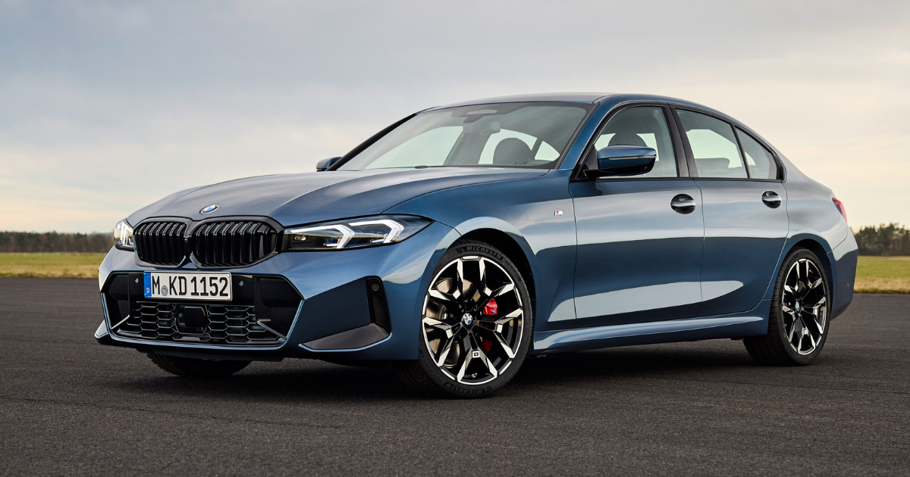
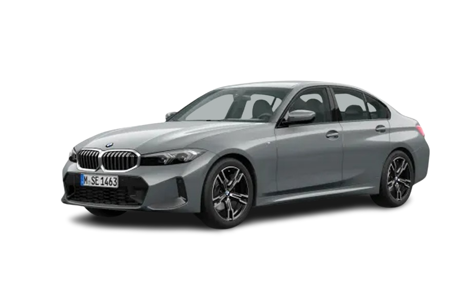
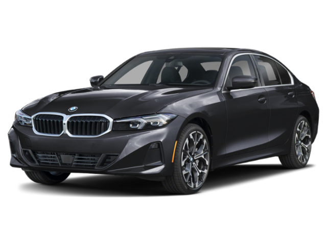
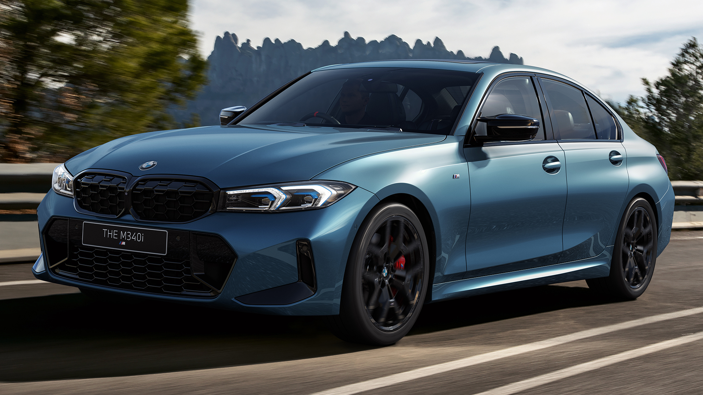

BMW
BMW 3 Series
جميع نسخ BMW 3 Series مع المواصفات الرسمية مرتبة في صفحة واحدة لتسهيل المقارنة بين جميع الإصدارات.
جميع نسخ BMW 3 Series مع المواصفات الرسمية مرتبة في صفحة واحدة لتسهيل المقارنة بين جميع الإصدارات.

| المحرك | 2.0 لتر تيربو |
| عدد الأسطوانات | 4 |
| القوة | 156 حصان |
| عزم الدوران | 250 نيوتن متر |
| ناقل الحركة | 8 سرعات Steptronic |
| نظام الدفع | خلفي |
| التسارع (0-100) | 8.4 ثانية |
| السرعة القصوى | 223 كم/س |
| عدد المقاعد | 5 |
| نوع الوقود | بنزين |

| المحرك | 2.0 لتر تيربو |
| عدد الأسطوانات | 4 |
| القوة | 184 حصان |
| عزم الدوران | 300 نيوتن متر |
| ناقل الحركة | 8 سرعات Steptronic |
| نظام الدفع | خلفي |
| التسارع (0-100) | 7.4 ثانية |
| السرعة القصوى | 235 كم/س |
| عدد المقاعد | 5 |
| نوع الوقود | بنزين |

| المحرك | 2.0 لتر تيربو |
| عدد الأسطوانات | 4 |
| القوة | 258 حصان |
| عزم الدوران | 400 نيوتن متر |
| ناقل الحركة | 8 سرعات Steptronic |
| نظام الدفع | خلفي |
| التسارع (0-100) | 5.8 ثانية |
| السرعة القصوى | 250 كم/س |
| عدد المقاعد | 5 |
| نوع الوقود | بنزين |

| المحرك | 3.0 لتر 6 أسطوانات مستقيمة تيربو + نظام هجين خفيف |
| عدد الأسطوانات | 6 |
| القوة | 374 حصان |
| عزم الدوران | 500 نيوتن متر |
| ناقل الحركة | 8 سرعات Steptronic Sport |
| نظام الدفع | xDrive رباعي |
| التسارع (0-100) | 4.4 ثانية |
| السرعة القصوى | 250 كم/س |
| عدد المقاعد | 5 |
| نوع الوقود | بنزين |